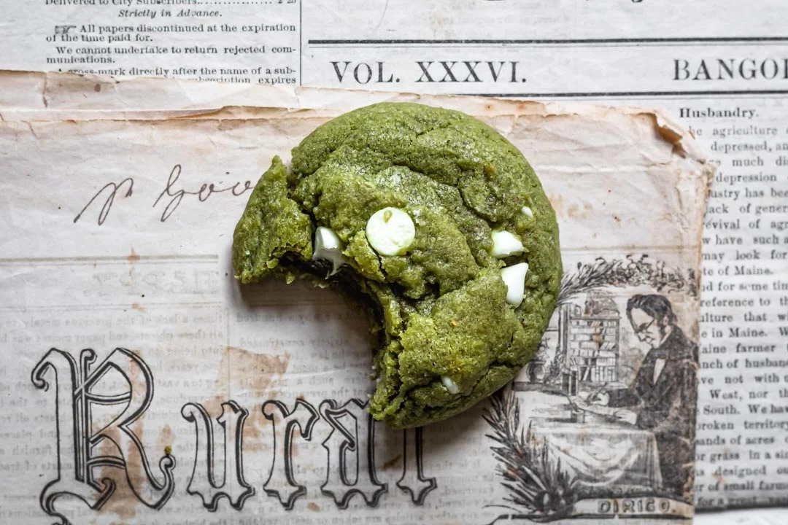
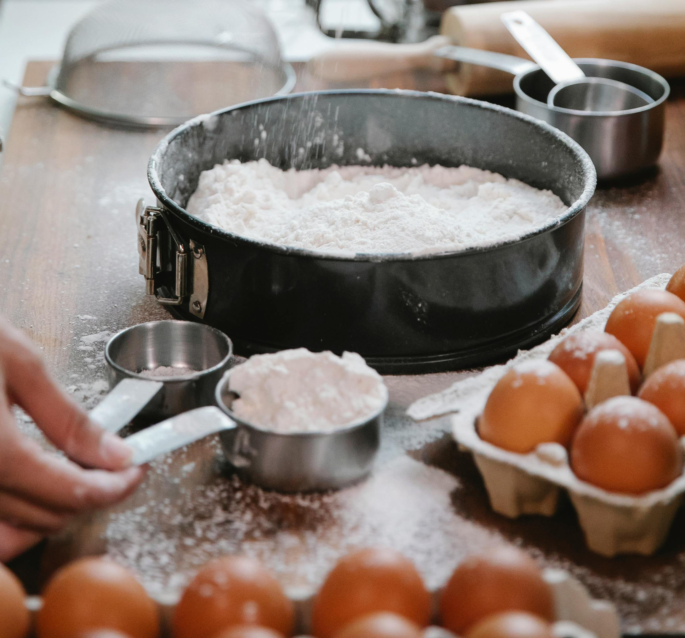
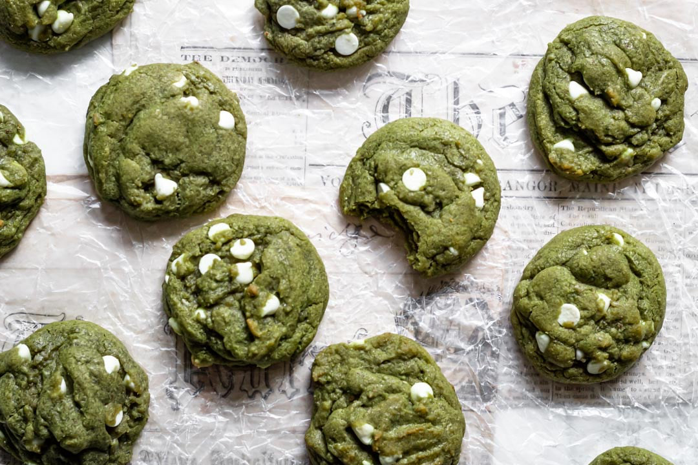

A Cookie Recipe
Brown Butter White Chocolate Matcha Cookies
415 Ratings

Prep: 20 mins
Cook: 20 mins
Rest: 15 mins

Description
Introducing the Brown Butter White Chocolate Matcha Cookie: a decadent treat that harmoniously blends rich flavors and luxurious textures. This cookie starts with the nutty depth of brown butter, creating a warm, toasty foundation. Swirled with creamy white chocolate chips that melt into a luscious, gooey embrace, it offers a perfect balance of sweetness and savory notes. The star of the show, matcha, lends a vibrant green hue and a subtle, earthy taste that cuts through the richness, adding a sophisticated twist. Each bite is a delightful fusion of creamy, buttery, and slightly grassy notes, with a soft, chewy texture that melts in your mouth. Ideal for those who crave a unique and indulgent cookie experience.
Ingredients
- 2 cups + 2 tbsp all purpose flour
- 1 tsp baking soda
- 1/2 tsp salt
- 1 tbsp matcha powder
- 1 cup unslated butter
- 1/2 cup granulated sugar
- 1 cup light brown sugar
- 1 tsp vanilla extract
- 2 eggs, room temperature
- 1 cup white chocolate chips

Equipment
- Cookie Scoop
- Oven Thermometer
- 2 Baking Sheets
- Two Mixing Bowls
- Parchment Paper

Instructions
- Brown your butter. Heat your butter over medium heat until it turns a golden yellow color. Pour butter in a heat proof bowl to cool. As the butter cools, it will get darker in color.
- Combine flour, baking soda, salt, and matcha powder in a medium size mixing bowl. Mix well and set aside.
- Next add in white sugar and brown sugar to your butter. Mix to combine. Once well combined, add in your eggs and vanilla.
- Whisk together. Whisk until you get a light and creamy texture (~1 minute). This is the key to getting a crisp and chewy cookie.
- Once the wet ingredients are well mixed, slowly add in the dry ingredients from step 3. Combine with a spatula until a green dough forms.
- Add in the white chocolate chips and mix until they are well incorporated.
- Let the dough rest in the fridge for 1 hour.
- Preheat oven to 350 degrees F.
- Cover 2 baking sheets with parchment paper. Use a 3 tablespoon (1.5 oz) ice cream scoop to scoop cookie dough onto baking sheets. Cookies should be 2-3 inches apart.
- Bake for 10-12 minutes.
- Let cookies cool for 10 minutes before putting them on a cooling rack.
- Cool cookies for another 15 minutes before serving.
Enjoying Matcha <3
Matcha is a versatile ingredient used in baking and various beverage recipes. In completing this recipe we hope that these cookies bring you as much enjoyment as it did for us and to inspire you in exploring what matcha has to offer!

Additional Notes
This is NOT my own recipe.
The original recipe can he accessed here:
Link to CookingTherapy.com - Matcha White Chocollate Chip Cookies